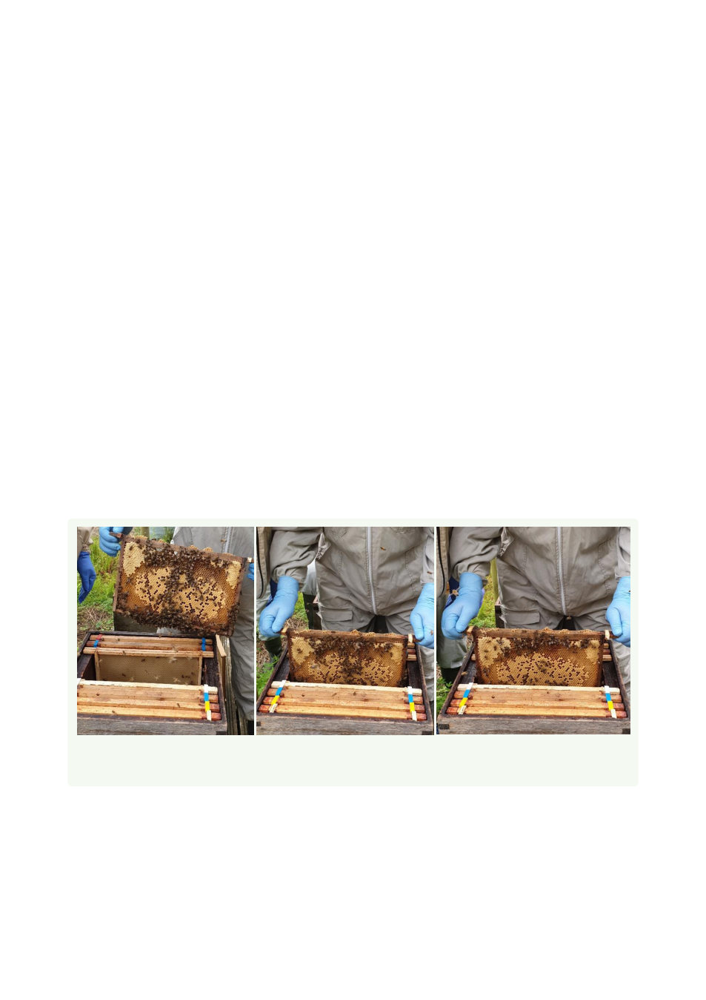

Step 3. Remove the centre four frames from the new brood box and put them to one side.
The flying bees from the old hive will return to this clean brood chamber
Step 4. Open the hive you intend to shake, removing the supers and queen excluder (if
present). Place them inside the upturned roof. Examine the old brood chamber and find
the queen
Note: If you are not comfortable with finding the queen, then ensure you carefully shake
the bees into the new colony and carefully check every piece of kit before reassembling it.
When shaking frames, they should not be literally shaken but rather the bees are knocked
off by a quick downward motion of the frame; being careful to avoid knocking the frame
against the hive or other frames (see below)
Step 5. Once the queen has been found, place her between the frames of foundation in
the new box, or in a queen cage so that she can be released into the new chamber when
you have finished shaking the bees
Step 6. Shake all the bees from the old combs into the new chamber. This is done by
holding a frame of bees about one third of the way into the gap left between the frames of
foundation in the clean chamber. The frame is then moved quickly downward and
suddenly stopped. Try to avoid knocking the comb against the chamber. The bees will fall
off the comb into the new box and any remaining on the comb can be brushed off
Step 7. Shake and brush bees on the old equipment into the new chamber. If there are
any supers, shake the bees from them into the brood box
Figure 3: Tightly grip the lugs of the frame and lower it gently into the space between the
frames. Give the frame a sharp downward shake into the brood chamber
35